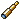
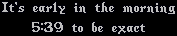

UOの中では昼〜夜〜昼といった時間の流れや月の満ち欠けがあり、アイテムによってそれらの詳細を知ることができます。 ここでは時間に関連することを知ることができるアイテムを紹介し、時間や月の満ち欠けの流れについても まとめていきます。
１．時間を確認するアイテム
UO内の時間や月の満ち欠けの確認は下に示すアイテムで行うことができます。-
―時間―
 Clock・・・細工スキルで作成することができます。NPC細工屋から購入も可能です。
Clock・・・細工スキルで作成することができます。NPC細工屋から購入も可能です。
 A Holiday Timepiece・・・1999または2002年のクリスマス記念品でした。
A Holiday Timepiece・・・1999または2002年のクリスマス記念品でした。
-
―月の満ち欠け―
- Spyglass・・・細工スキルで作成することができます。
２．時間の流れについて
ClockおよびA Holiday Timepieceをダブルクリックすると、下の画像のように時間を知ることができます。何回も連続して時間を調べると、
結構な速さで時間が流れていることもわかると思います（下の画像は、UO内で午前5：39となっていたときのものです）

時刻の前に表示されるメッセージは調べたときの時刻に対応しており、下表のようになっています。
| 時刻 | 昼／夜 （見た目） |
メッセージ |
| AM0:00〜0:59 | 夜 | Tis the witching hour. 12 midnight. 今は真夜中の12時です。 |
| AM1:00〜4:59 | 夜 | It's the middle of the night. 今は深夜です。 |
| AM5:00〜8:59 | 夜→昼 | It's early in the morning. 今は早朝です。 6時くらいに明るくなります。 |
| AM9:00〜11:59 | 昼 | It's late in the morning. 今は午前です。 |
| PM0:00〜0:59 | 昼 | It's around noon. 今はお昼です。 |
| PM1:00〜4:59 | 昼 | It's the afternoon. 今は午後です。 |
| PM5:00〜8:59 | 昼 | It's early in the evening. 今は夕方です。 |
| PM9:00〜11:59 | 昼→夜 | It's late at night. 今は夜です。 10時くらいに暗くなります。 |
表からもわかるように、UO内では夜が8時間、昼が16時間となっています。
また、UO内の1分は実際の時間では5秒となっており、実際の2時間でUO内は1日経過することになります。
３．月の満ち欠けについて
Spyglassをダブルクリックすると、下の画像のように月の満ち欠けの状態を知ることができます。さらに、月の満ち欠けは時間とともに 下表のように変わっています（TrammelはUO内時間で4時間周期、FeluccaはUO内時間で80分周期）| 時刻 | Trammel | Felucca |
| AM0:00〜 | 満月 | 満月 |
| 0:10〜 | 満月 | 十九夜月 |
| 0:20〜 | 十九夜月 | 下弦の月 |
| 0:30〜 | 十九夜月 | 二十三夜月 |
| 0:40〜 | 十九夜月 | 新月 |
| 0:50〜 | 下弦の月 | 三日月 |
| 1:00〜 | 下弦の月 | 上弦の月 |
| 1:10〜 | 下弦の月 | 十三夜月 |
| 1:20〜 | 二十三夜月 | 満月 |
| 1:30〜 | 二十三夜月 | 十九夜月 |
| 1:40〜 | 二十三夜月 | 下弦の月 |
| 1:50〜 | 新月 | 二十三夜月 |
| 2:00〜 | 新月 | 新月 |
| 2:10〜 | 新月 | 三日月 |
| 2:20〜 | 三日月 | 上弦の月 |
| 2:30〜 | 三日月 | 十三夜月 |
| 2:40〜 | 三日月 | 満月 |
| 2:50〜 | 上弦の月 | 十九夜月 |
| 3:00〜 | 上弦の月 | 下弦の月 |
| 3:10〜 | 上弦の月 | 二十三夜月 |
| 3:20〜 | 十三夜月 | 新月 |
| 3:30〜 | 十三夜月 | 三日月 |
| 3:40〜 | 十三夜月 | 上弦の月 |
| 3:50〜 | 満月 | 十三夜月 |
| 4:00〜 | 満月 | 満月 |
４．Night sightの効果
Night sight（魔法、ポーション）は、一定時間がたつと効果が失われてしまいますが、そのタイミングもUO内の時間が影響しています。-
―Night sightの切れる条件―
- UO内の時間が、AM0:00、AM4:00、AM8:00、AM12:00、PM4:00、PM8:00となったとき。
- ただし、ポーションまたは魔法を使用して効果が失われる1回目のタイミングでは効果は継続し、2回目のタイミングで効果が失われます。
たとえば、AM3:00にNight sightを使用したとき、1回目のタイミングとなるAM4:00では効果はそのまま継続し、AM8:00に効果が失われます。 - 実際の時間に換算すると、およそ20分から40分効果が継続することになります。